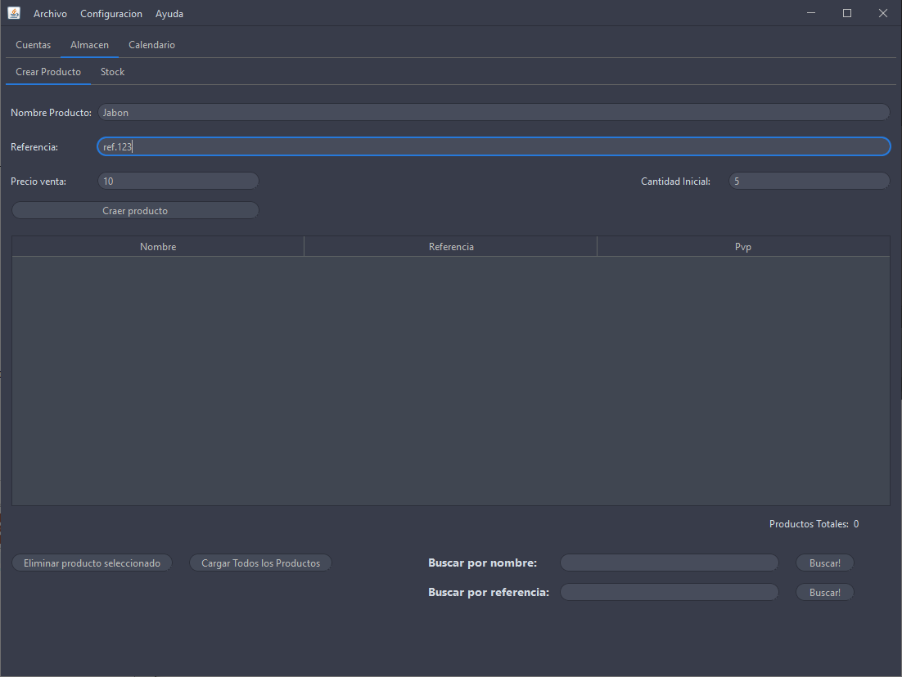

En este apartado veremos un ejemplo de uso de la aplicación, tal y como se haría en un entorno de trabajo, explicando todos los pasos a seguir
.
Cuando iniciamos el programa por primera vez tenemos la siguiente interfaz
Podemos hacer las siguientes funciones:
Elimina todos los datos de la base de datos
Crea la base de datos con las tablas correspondientes, esto se muestra con un cuadro de texto que muestra las tablas que se han creado
Nos abre la interfaz principal de la aplicación
Permite ajusta el programa antes de abrirlo
Para poder hacer un albarán primero debemos tener creados los productos por lo cual vamos a dirigirnos al apartado de Almacén/Crear Producto
Rellenamos los campos con los valores que veamos necesarios y le damos a crear producto

Para seguir con el albarán nos vamos a la ventana de albarán y le damos a los "..." Del primer campo, así seleccionamos el producto del cual haremos el albarán, posteriormente llenamos el resto de campos y le damos a agregar
una vez tengamos todos los productos agrados vamos a poner un nombre de albarán y le damos a crear albarán y vemos como aparece a la derecha junto a los otros albaranes
así podemos crear un alaban que es una de las funcionalidades principales de esta versión del programa, posteriormente se le agregaran funcionalidades como ventas o facturas